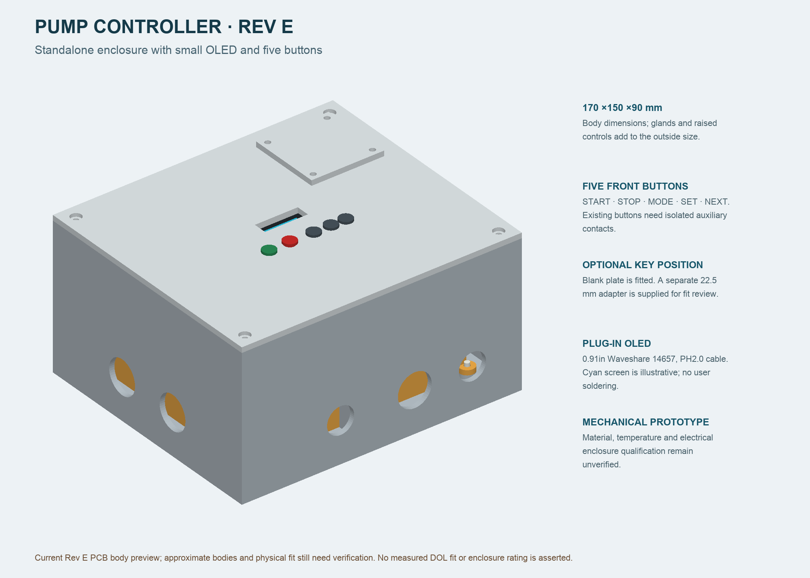

Rev E controller
The guard covers the live connections. The OLED and buttons are on the isolated side. Lines below identify cable functions, not terminal positions in the photo.
Protected supplyAfter the starter disconnect
J1 · Controller power1 line · 2 neutral
Contactor coil circuitOriginal STOP and overload in series
J30 · Two series relay contacts1 CTRL_IN · 2 CTRL_OUT
CT on one motor conductorBurden fixed at the current transformer
J10 · Guarded current inputFactory-terminated live-domain cable
Existing START and STOPSeparate insulated auxiliary contacts
Panel J2 / J3 · OptionalSTART normally open · STOP normally closed
Tank / inlet / high-high floatField sensor cable group
J20 / J21 / J31 · Isolated inputsInlet needs a proven water-side return
Buttons and displayTwo factory-crimped cables inside
Main J32 → panel J1 · Panel J7 → OLED12-way panel cable · 4-way display cable